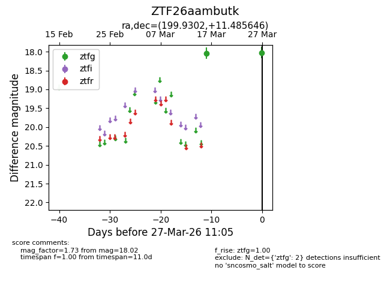
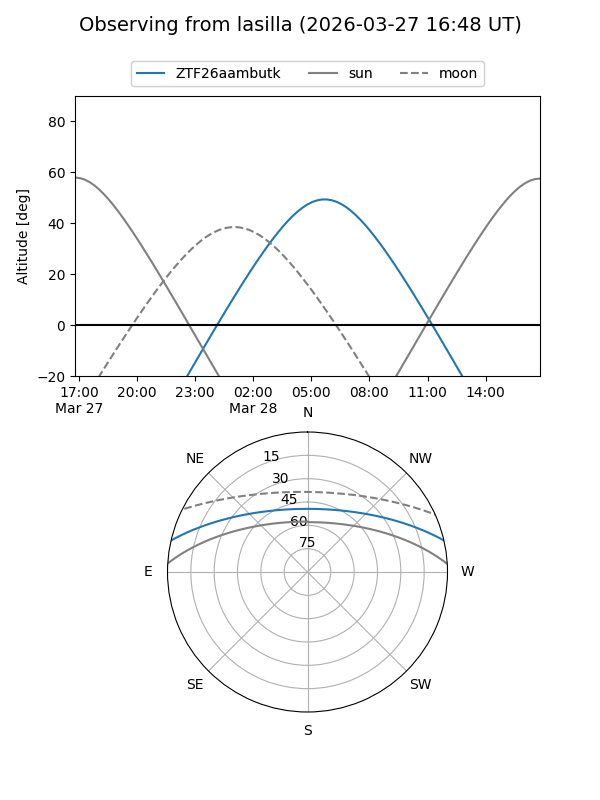
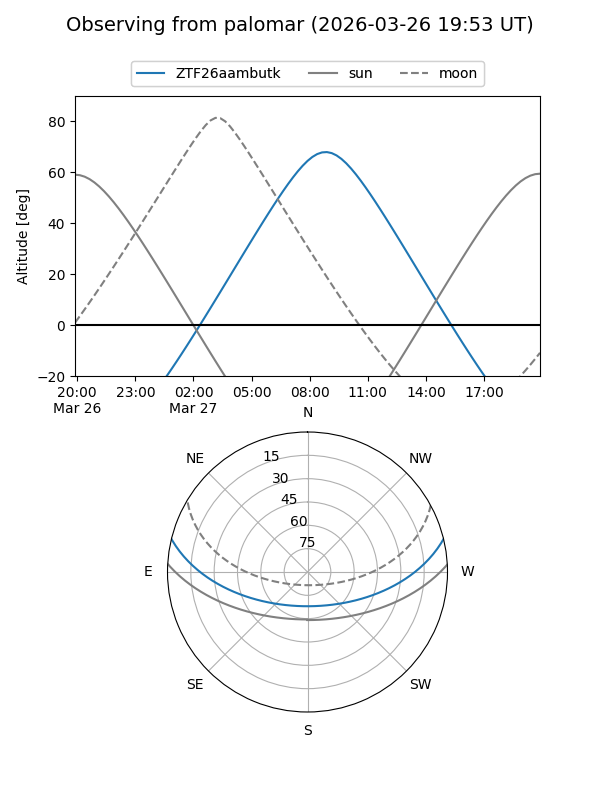

ZTF26aambutk
Target ZTF26aambutk at 2026-03-27 11:08
Aliases and brokers:
FINK: link
Lasair: link
ALeRCE: link
alt names
ZTF26aambutk (ztf,fink_ztf)
Coordinates:
equatorial (ra, dec) = 199.9302,+11.48565
equatorial (HMS+DMS) = 13:19:43.25,+11:29:08.33
galactic (l, b) = (327.3067,+73.00485)
Flags:
Photometry:
last ztfg=18.02
2 ztfg detections
Lightcurve

Visibility


Additional plots